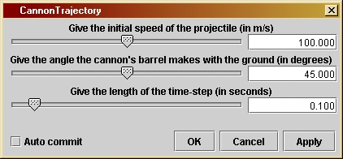

CannonTrajectory
|
This program is the most elementary one in the book, and many later programs are based on it.It is introduced in Investigation 1.3. It introduces the important programming concept of loops.
Initially this window will not necessarily use the same scale for distances in the horizontal and vertical direction, since it is set by default to adjust the scales to show the most information about the curve. Users are recommended to change this so that the vertical and horizontal scales are the same. Go to the "Plot" menu of the SGTGrapher display, and select "force equal ranges on both axes", then press "Reset Zoom".
You can change the initial speed, angle, and time-step by using the parameter window of the unit, illustrated here. Double-click on the CannonTrajectory unit in the working area to get this window. Either adjust the slider by dragging it with the mouse, or type a new value into the boxes at the right of each slider, followed by the "Apply" key. Experiment with the angle to see what angle gives the maximum range. Make the time-step longer to see what effect this has. If you choose a speed that makes the curve go off the scales you have chosen for the graph window, use the Zooming window described in the previous paragraph to re-set the scale maximum values to larger ones so that you can see it all.
Loops are described in the Introduction
to Programming in Java. For CannonTrajectory,
the important issues are: 1) what steps to we want to repeat, 2)
how do we start the calculation, and 3) how do we decide when to stop
the
calculation?
The next step inside the loop is to compute the change in the
vertical
speed due to the downward acceleration. Since the speed going into this
step was v, the new value of the
vertical
speed is v - g*dt, since we are using
the
variable g to hold the value of the acceleration of gravity. Instead of
assigning this to v in a way analogous
to
the way we reassigned the new horizontal position value to x
above, we assign this to a different variable w:
w = v - g*dt;
This is because we still need the old value of v
a little later on, so we temporarily keep its new value in w.
Now we can compute the new vertical position of the cannonball. We
could
simply advance its position by using the new value of the vertical
speed, w.
This would give us a statement like h = h + v*dt.
But this is less accurate than what we actually do in the program,
which
is to use the average value of the vertical speed during the
interval
of time dt. The average value is (v
+ w)/2, so the actual statement is
h = h + (w + v)/2*dt;
Notice that this is a re-assignment to the variable h,
just as we did for x above. The need
to use
the old speed v in this expression is
the
reason that we introduced the variable w
above.
We want to save the values of the position variables so we can
plot
the graph after the calculation is finished. This means they should be
stored in the arrays we defined for this purpose. We execute the
statements
verticalDistance[j] = h;
horizontalDistance[j] = x;
For an explanation of the meaning of the notation "[j]"
see the general remarks on arrays in the Introduction
to Programming in Java. It means that the j'th
element of the vector verticalDistance
will
contain the value of h, and the j'th
value of horizontalDistance will
contain
the value of x for this step.
Finally, we can dispense with w,
which
was just a temporary storage location. We want v
to contain the most recent value of the vertical speed when the loop
repeats,
so before the repeat we have to execute the statement
v = w;
This ensures that at the next step all the variables have their
intended
meanings.
The second way of stopping is more physical: when the cannonball
hits the ground again, then we should stop, since our assumption of
free
fall is no longer correct! Our implementation of this condition is
crude.
We simply test the value of h at the
end
of each step in the loop. If h is
negative,
then we do not do any more steps. The for
statement that begins the loop contains the test that must be passed
for
steps to continue. In our case this is:
( h >= 0.0 ) && ( j < 1000 )
This is a logical expression with two sub-expressions. (To learn about
logic statements, see the Introduction
to Programming in Java.) The first sub-expression is (
h >= 0.0 ), which evaluates to the logical value true
if h is positive or zero. The second
sub-expression
is ( j < 1000 ), which evaluates to
true
if the index j is less than 1000. The two parts are joined by the "&&"
operator, which means logical AND in Java. The resulting overall
expression
therefore evaluates to true only if both
sub-expressions
are true, and to false if either
of
the sub-expressions is false. Thus, the loop repeats if and only if the
projectile is still in the air and we have not had too many steps.
Notice that j must be less than 1000; it is not allowed to equal 1000, even though the arrays have been set up to have 1000 elements. This is because in Java array index values begin at 0. So an array with 1000 elements has a maximum index value of 999. This is the maximum allowed value for j.
The second step in creating output is to package it up in a data
type
that Triana calls a Curve. This
contains
the two data arrays plus the name of the data (called its title) and
the
labels for the horizontal and vertical axes. We define the Curve
to contain the data in the step
Curve
out = new Curve( finalHorizontal, finalVertical );
We then define its labels with functions built into Triana for this
purpose:
out.setTitle("Trajectory
of projectile");
out.setIndependentLabels(0,"horizontal
distance (m)");
out.setDependentLabels(0,"vertical
distance (m)");
And finally we output this data set to the output node with the final
statement of the program:
output(
out );
When this data arrives at Triana's graphing unit, it knows enough about
the Curve data type to interpret the
two
arrays as containing the x- and y-coordinates of the points to be
plotted.
The first change you might experiment with is to make the vertical
steps
less accurate by replacing
h = h + (w + v)/2*dt;
with
h = h + w*dt;
See what the effect of changing the time-step is on the accuracy of
the calculation.You should find that it becomes more noticeable if you
make the time-step bigger.
The second change could be to make the ending of the trajectory more
accurate. At present, the first negative value of h ends the loop, but
is stored as the value of the height. Really, the trajectory has ended
between this last time-step and the previous one. You might try to
calculate,
from the given data, an approximation to the horizontal distance at
which
the height went to zero, and use these values as the last values in the
stored data array.
private double g = 9.8;
/*
dt is the time-step in seconds.
Its value for any run is set by
the user in the parameter window.
*/
private double dt;
/*
speed is the launch speed
in meters per second. Its value for any
run is set by the user in
the parameter window.
*/
private double speed;
/*
angle is the launch angle
in degrees, measured from the horizontal.
Its value for any run is set
by the user in the parameter window.
*/
private double angle;
/*
Initialize
the calculation:
- Define
horizontalDistance and verticalDistance to be arrays
holding the horizontal distance and height reached by the
cannonball at each time-step. Give them length 1000 to allow
for up to 1000 time-steps in the trajectory.
- Define
x and h to be the variables used to store these distances
temporarily at each time-step of the calculation.
- Convert
the input angle to radians so we can use trig functions.
Use the Java built-in value of pi, called Math.PI.
- Define
u and v to be the horizontal and vertical components
of the velocity; compute their values from the speed and
angle chosen by the user. Use the trig functions built into
Java, called Math.cos and Math.sin.
- Introduce
w, a variable that stores an intermediate value
of the vertical speed.
- Set the
initial values stored for the height
and distance to zero.
- Define
an integer variable j to count steps.
*/
double[]
horizontalDistance
= new double[1000];
double[]
verticalDistance
= new double[1000];
double x = 0;
double h = 0;
double theta = angle
* Math.PI / 180.0;
double u = speed *
Math.cos(
theta );
double v = speed *
Math.sin(
theta );
double w;
horizontalDistance[0]
= 0;
verticalDistance[0]
= 0;
int j;
/*
Now enter
the loop that computes each time step in succession.
The variable
j is a counter: it starts at 1 and increases
by one at
each step of the loop.
There should
be no more than 1000 time-steps, since that is
the size
of the array we have defined to hold the data. But
the
calculation
should end when the height is negative,
meaning
that the cannonball has returned to the ground and
would
actually
be below it if the ground were not there.
Therefore
the condition for continuing the loop is
( h >= 0.0 ) && ( j < 1000 )
*/
for ( j = 1; (( h >= 0.0 ) && ( j < 1000 )); j++ ) {
/*
At each step in the loop the value of x starts out as
the horizontal distance at the previous step. Increase
it by the distance traveled in time dt so that it now has
the new value of the distance.
*/
x = x + u*dt;
/*
At each step in the loop the value of v starts out as
the vertical speed at the previous one. Since we want to
use the average of the vertical speeds at two time-steps,
keep v unchanged at first, and define w to be the speed
at the present time-step. Thus, w equals v diminished by
the downward acceleration.
*/
w = v - g*dt;
/*
Now follow the rule described in the text, that the
change in vertical height depends on the average speed
over the time-interval, in other words on the speed
(w + v )/2.
Multiply this speed by the interval of time dt and
increase the height by this amount. Note that the speeds
eventually will become negative because of the previous
line of code, so that eventually h will begin to decrease.
*/
h = h + (w + v)/2*dt;
/*
Now store the calculated height and horizontal distance in
the arrays defined for them. This allows us to re-use h and
x for the new values at the next time-step without losing
the values we have computed for this time-step.
*/
verticalDistance[j] = h;
horizontalDistance[j] = x;
/*
Finally update the variable v so that it stores the vertical
speed for the present time-step. That way, at the next step
in the loop it will contain the "old" speed, as required
for the averaging of speeds described above.
*/
v = w;
}
/*
The closing
bracket above is the end of the group of statements
that form
the loop. The computer increases j here and tests to
see if it
should do another step in the loop. If so it goes
back to
the first statement after the opening bracket at the end
of the "for"
statement above. If not it goes to the next statement.
*/
/*
We have
now exited from the loop. That means that either the height
is negative
(the cannonball has returned to the ground), or the
loop has
run through 1000 steps before the cannonball returned.
In the
latter
case, the user will see from the output that the
trajectory
is not ended, and the whole thing should be run again
with a
larger
choice of time-step.
For the
case where the cannonball returns before we run out of
the
allocated
number of steps, the variable j is equal to one
more than
the number of steps, since it got increased at the end
of the final
loop step, after the last values were stored. So
we define
two new arrays of exactly the length needed to hold
the data,
copy the values into them, and then output the result
so that
it can be examined, printed, or graphed. (We have to go
to the
trouble
of defining new arrays since, in Java, it is not
possible
to re-define the length of an array without losing the
data stored
in it.) The new arrays should have length j since
they contain
the initial values as well as the values at all the
time-steps.
The output
is defined to be an object called a Curve, which is a
data type
defined in Triana. It contains not only the data but
also the
labels that can be used by the grapher. So we set here
the title
and the horizontal and vertical axis labels.
*/
double[]
finalHorizontal
= new double[j];
double[] finalVertical
= new double[j] ;
for ( int k = 0; k
<
j; k++ ) {
finalHorizontal[k] = horizontalDistance[k];
finalVertical[k] = verticalDistance[k];
}
Curve out = new Curve(
finalHorizontal, finalVertical );
out.setTitle("Trajectory
of projectile");
out.setIndependentLabels(0,"horizontal
distance (m)");
out.setDependentLabels(0,"vertical
distance (m)");
output( out );
}